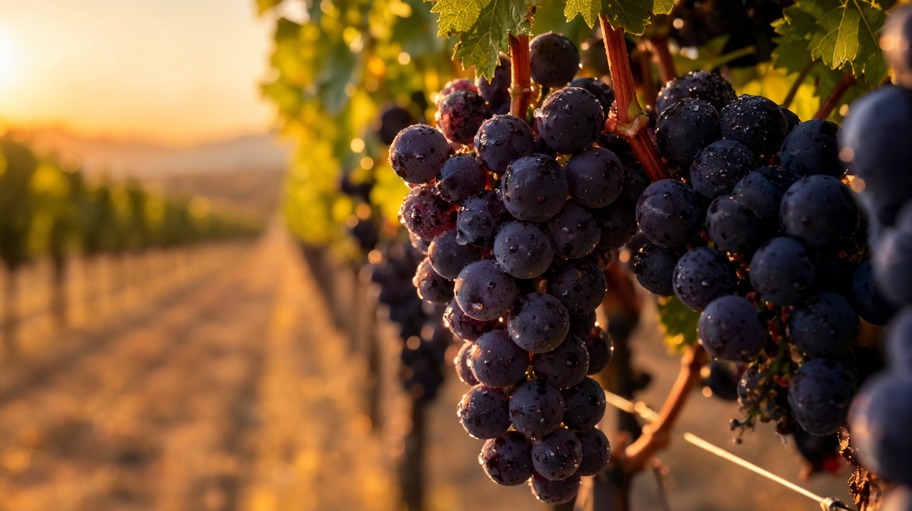
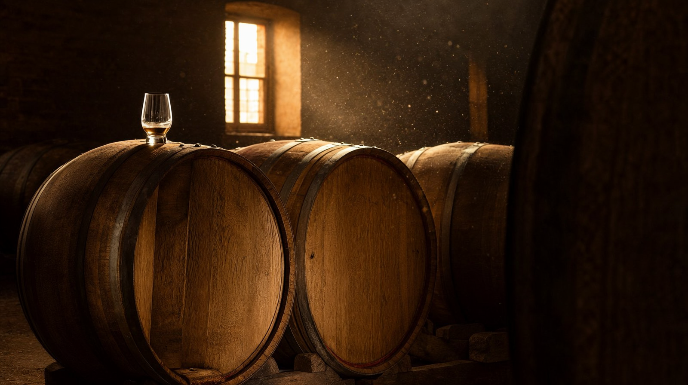
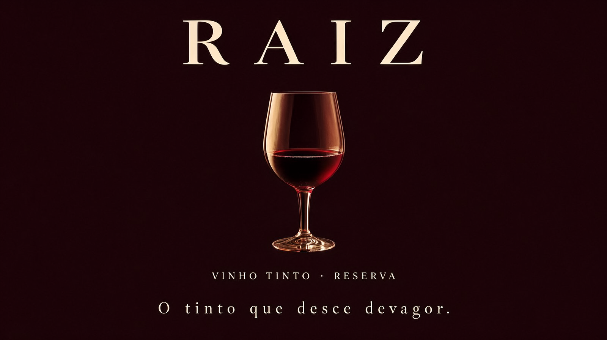
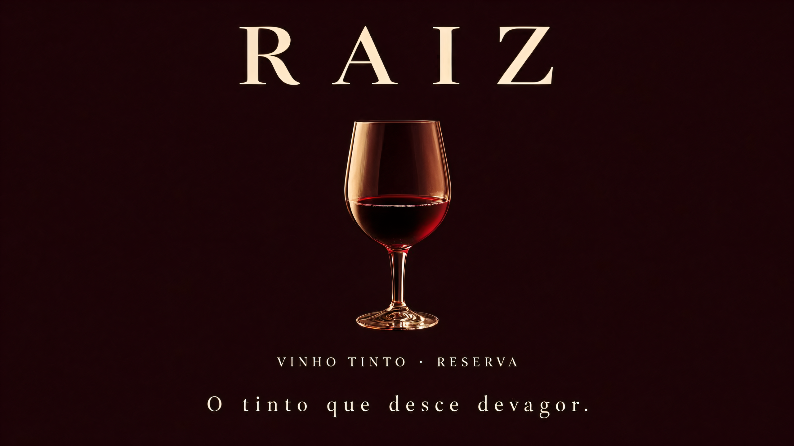

A v6 adiciona a peça que faltava no comercial local: locução em português gerada na própria CPU (Piper TTS), três variantes do jingle para escolher, e o teste honesto do take longo contínuo. Produto novo: RAIZ, vinho tinto — paleta ruby inédita na série, 1080p · 48 fps.
Testes controlados
| Teste | Resultado |
|---|---|
| Locução PT-BR local — Piper TTS 1.8 (pip, CPU) + voz pt_BR-faber-medium (61 MB) | ✓ Duas falas ("Feito de tempo e silêncio." / "RAIZ. O tinto que desce devagar.") em 1,5–2,2 s cada, mixadas no master A. Pipeline de voz 100% local e offline. |
| Take contínuo de 10 s a 1080p (241 frames, Turbo) | Inválido p/ produção nesta GPU: >2 h de decode (abortado). O custo do take dobra a cada dobro de frames — takes de 5 s seguem como padrão; 10 s cabe a 704p (~25 min) se um spot pedir. |
| Jingle em variantes (mesma letra, 3 seeds) | ✓ v1/v2/v3 geradas em 10 s cada — a melhor entra no master B, as três disponíveis abaixo para ouvir. |
O produto novo · 20 s · 1920×1080 · 48 fps




A jornada
| v1 | v2 | v3 | v4 | v5 | v6 | |
|---|---|---|---|---|---|---|
| Produto | Perfume | Café | Cerveja | Mel | Chocolate | Vinho |
| Resolução | 480p↑ | mista | mista | 704p | 1080p | 1080p |
| Fps | 24 | 24 | 48 | 48 | 48 | 48 |
| Áudio | ambiência | ambiência | trilha H3 | +música IA | +jingle PT | +locução PT-BR + 3 jingles |
| QA típico | 7/10 | 9/10 | 9/10 | 8–9/10 | 9/10 | 9–10/10 |